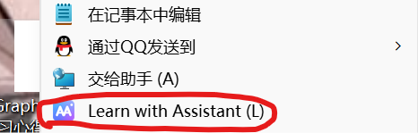
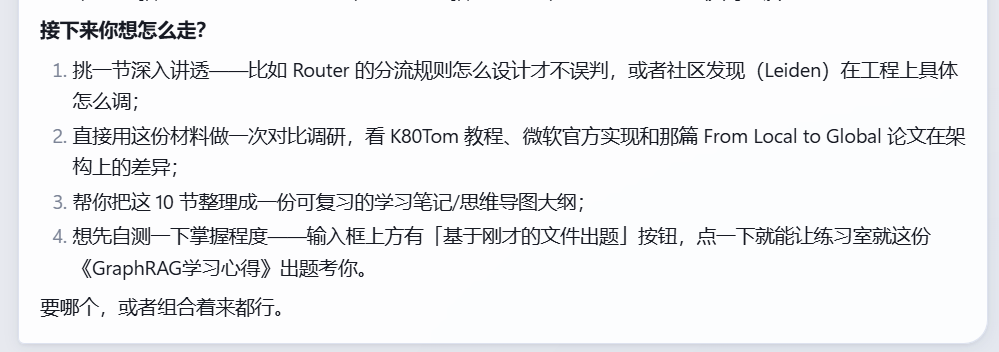
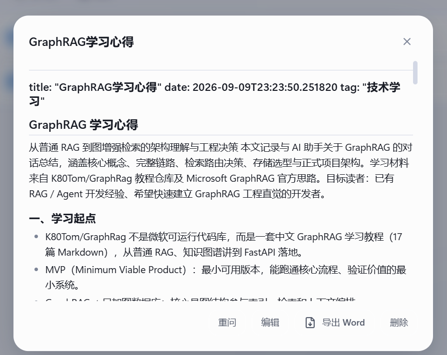
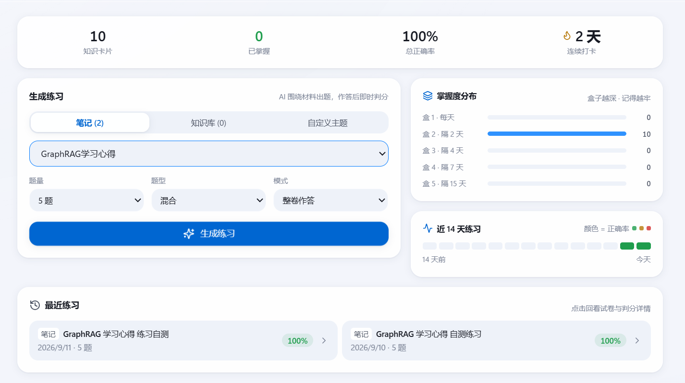
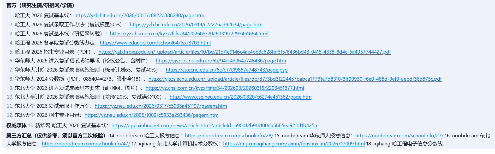
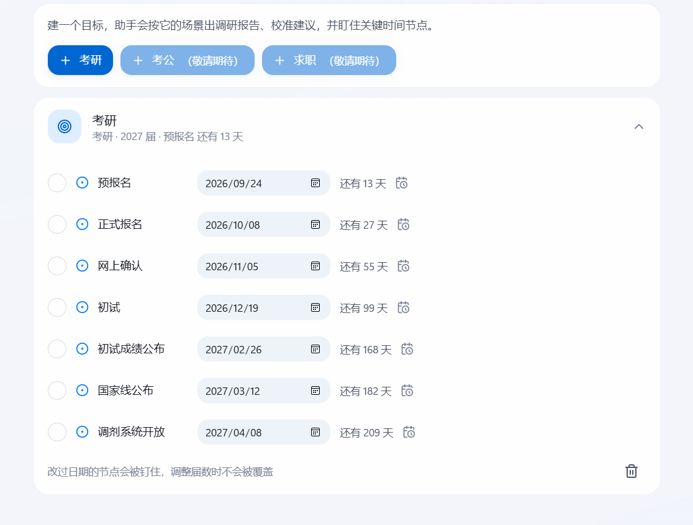

AI 负责跑腿：读、搜、存、出题、判分。人负责掌握：按遗忘曲线回炉，学过的不再还给老师。
点击橙色按钮先看下载区，或直接点左侧黑色图标。
全国约 4700 万在校生几乎人人都在用 AI 辅助学习，但用法停留在"搜一搜、问一问、抄一抄"。 认知科学的基本事实没变：不测试就会遗忘——20 分钟后遗忘 42%。 通用 AI 助手对话即终点，无沉淀、无检验、无复习，于是用得越方便，"虚假掌握"越普遍。
聊天记录无法沉淀为结构化知识资产，换一个会话就失忆，学过的东西零散在各处。
间隔重复是被验证有效的方法，但制卡成本极高，多数学生坚持不下来——工具不负责"坚持"。
一次择校调研可能要写几十个抓取脚本、处理异步目录与乱码 PDF——这不该每个学生重复支付。
它不为"所有人"而做。如果你在下面四条里看到自己，那这套闭环大概率正是你缺的那一半。
几十所院校、几百条分数线、推免占比与科目代码差异，翻贴吧翻到凌晨还是不敢拍板。 四校对比报告 3 分钟出结果，每个数字都带来源可点开核验，关键节点自动生成倒计时。
论文、课件、真题——收藏了就等于学过，其实再没打开过。 右键一份 PDF 交给助手：精读 → 沉淀成结构化笔记 → 就这份材料出题考你。
未发表的想法、实验数据、个人笔记，不想成为别人的训练语料。 资料、知识库、对话全存本机，唯一的外部依赖是可替换的模型 API。
目标会变，工具不该每次重买。轨道只是一份配置文件（场景提示 + 输出字段 + 时间节点）， 换目标零代码切换，同一份资料服务不同轨道。
只想让 AI 直接给答案、不想被出题拷问的人；期待装上就能用、不愿配一次模型 API Key 的人； 以及希望手机端立刻上手的人（当前是 Windows 桌面版，移动端在规划中）。
每个环节都是 AI 自主执行的任务流，Token 是它的燃料与计量单位—— 哪一步花多少预算、何时收尾交付，全部透明可审计。




通用助手向上够不到"学习管理"，记忆工具向下做不了"智能执行"。 词元新学占据两者围出的空档，并把"数据主权"还给学生。
| 能力 | 通用 AI 助手 | AI 搜索 | 记忆工具 | 词元新学 |
|---|---|---|---|---|
| 基于自有材料自动出题与判分 | 无 | 无 | 手动制卡 | 自动出题 + AI 批改 |
| 间隔复习调度 | 无 | 无 | 需手动维护 | Leitner 五盒自动化 |
| 深度调研与来源溯源 | 部分 | 强 | 无 | 多源交叉核验 + 分级标注 |
| 结构化解析（异步目录 / 乱码 PDF） | 无 | 无 | 无 | 三级降级解析管线 |
| 数据保存在本机 | 云端 | 云端 | 本地但无智能 | 本地优先 + 安全围栏 |
| 用户画像个性化 | 轻度 | 无 | 无 | 年级 / 专业 / 目标 / 轨道 |
学习资料、知识库与对话全部存本机（SQLite + 本地向量库），唯一的外部依赖是可替换的模型 API。
查不到就写「未获取到」，冲突就并列两个来源——严禁编造、严禁静默取舍。
主机熔断、超时重试、失败原因回灌、上下文自动压缩，长任务不烧穿预算也能交付"诚实的不完整报告"。
考研、考公、求职已是内置轨道。轨道只是一份配置文件（场景提示 + 输出字段 + 时间节点）， 不是代码分支——加一个"留学"轨道零代码。


四校对比报告、科目代码差异解读、推免占比风险、近三年分数线波动——3 分钟出结果。
常识与申论资料整理、时政跟踪，资料精读后自动出题巩固。
JD 与自身经历对比调研，差距清单自动整理成"面试速查卡"入库。
构建完成（2026-09-15）：单文件 exe 73.6 MB，已在本机实测启动通过。首次启动会自解压运行时，稍慢几秒属正常。